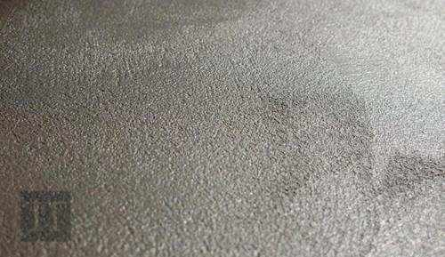

Εφαρμογή στρώσης βάσης και τελικής στρώσης
Το microcemento είναι επίστρωση που εφαρμόζεται σε διάφορα στρώματα. Πρέπει να διακρίνουμε δύο τύπους του υλικού ανάλογα με τη λειτουργία τους, το microcemento που εφαρμόζεται ως στρώση βάσης και εξομαλύνει το υπόστρωμα, και αυτό που εφαρμόζεται ως τελική στρώση, το οποίο θα διαμορφώσει και το τελικό αισθητικό αποτέλεσμα. Το microcemento που εφαρμόζεται ως τελική στρώση μπορεί να έχει διάφορες υφές: Microfino, Microdeck, Microstone και Aquaciment M ή F. Κάθε υλικό έχει τα ιδιαίτερα χαρακτηριστικά του και εφαρμόζεται με διαφορετικά εργαλεία.
Microcemento βάσης:
Εφαρμογή Microbase ή για πισίνες, AquacimentXL
Εφαρμόζεται με χαλύβδινη σπάτουλα σε δύο στρώσεις με μέγιστο πάχος 1 χιλιοστό. Πρέπει πάντα να ακολουθούμε πιστά τις αναλογίες μίξης του γρήγορου οδηγού.
Αφήνουμε κάθε χέρι να στεγνώσει 24 ώρες πριν απλώσουμε το επόμενο. Λειαίνουμε κάθε στρώση, για να εξομαλύνουμε την επιφάνεια, με λειαντικό δίσκο με κόκκωση 40. Αν αφήσουμε το υλικό να στεγνώσει για παραπάνω διάστημα από το ενδεδειγμένο, θα είναι πιο δύσκολο να λειάνουμε την επιφάνεια. Αν δεν εξομαλύνουμε την επιφάνεια, η εφαρμογή της επόμενης στρώσης θα είναι πιο δύσκολη και θα εμφανιστούν σημάδια στην επίστρωση.
Αφήνουμε την επιφάνεια να στεγνώσει για 24 ώρες πριν εφαρμόσουμε την τελική στρώση

Τελική στρώση:
Εφαρμογή Microfino
MicrofinoΕφαρμόζουμε ένα ή δύο χέρια Microfino πάνω στο Microbase με σπάτουλα από καουτσούκ ή ελαστική χαλύβδινη σπάτουλα ανάλογα με το διακοσμητικό αποτέλεσμα που θέλουμε να πετύχουμε.
Πρέπει πάντα να ακολουθούμε πιστά τις αναλογίες μίξης του γρήγορου οδηγού.
Αφήνουμε κάθε χέρι να στεγνώσει 3 ώρες πριν απλώσουμε το επόμενο. Λειαίνουμε με το χέρι ή με έκκεντρο περιστροφικό τριβείο με γυαλόχαρτα κόκκωσης από 120 έως 220. Αν λειάνουμε την ίδια μέρα της εφαρμογής του microfino, θα χρησιμοποιήσουμε γυαλόχαρτα με κόκκωση 220 καθώς η τσιμεντοκονία θα είναι ακόμη κάπως νωπή. Αν λειάνουμε την επόμενη ημέρα, η τσιμεντοκονία θα είναι πιο σκληρή γι' αυτό και θα χρησιμοποιήσουμε γυαλόχαρτα με κόκκωση 120. Το πάχος κάθε στρώσης για το Microfino δεν πρέπει να ξεπερνά τα 0,3 mm.

Εφαρμογή Microdeck
Εφαρμόζουμε δύο χέρια Microdeck πάνω στο Microbase με ελαστική χαλύβδινη σπάτουλα. Πρέπει πάντα να ακολουθούμε πιστά τις αναλογίες μίξης τουγρήγορου οδηγού..
Πριν απλώσουμε το δεύτερο χέρι, αφήνουμε το πρώτο χέρι να στεγνώσει για 3 ώρες και λειαίνουμε ελαφρά. Λειαίνουμε με το χέρι ή με έκκεντρο περιστροφικό τριβείο με γυαλόχαρτα κόκκωσης 80. Το πάχος κάθε στρώσης για το Microdeck δεν πρέπει να ξεπερνά τα 0,5 mm. Το συνολικό πάχος του συστήματος τσιμεντοκονίας συνιστάται να είναι 2-3 mm.

Εφαρμογή Microstone
Εφαρμόζουμε δύο χέρια Microstone πάνω στο Microbase με ελαστική χαλύβδινη σπάτουλα. Για την εφαρμογή αυτού του υλικού, αρκεί να προετοιμάσουμε το υπόστρωμα με ένα χέρι Microbase. Πρέπει πάντα να ακολουθούμε πιστά τις αναλογίες μίξης του γρήγορου οδηγού. Λειαίνουμε την επιφάνεια με λειαντικό δίσκο με κόκκωση 40.
Το πάχος κάθε στρώσης για το Microstone δεν πρέπει να ξεπερνά το 1 mm. Το συνολικό πάχος του συστήματος τσιμεντοκονίας συνιστάται να είναι 2-3 mm.

Εφαρμογή Aquaciment M ή F
Εφαρμόζουμε δύο χέρια Aquaciment M ή F πάνω στο AquacimentXL με ελαστική χαλύβδινη σπάτουλα. Πρέπει πάντα να ακολουθούμε πιστά τις αναλογίες μίξης του γρήγορου οδηγού. Λειαίνουμε την επιφάνεια με λειαντικό δίσκο με κόκκωση 80.
Το πάχος κάθε στρώσης για το Aquaciment δεν πρέπει να ξεπερνά το 1 mm. Το συνολικό πάχος του συστήματος τσιμεντοκονίας συνιστάται να είναι 2-3 mm.